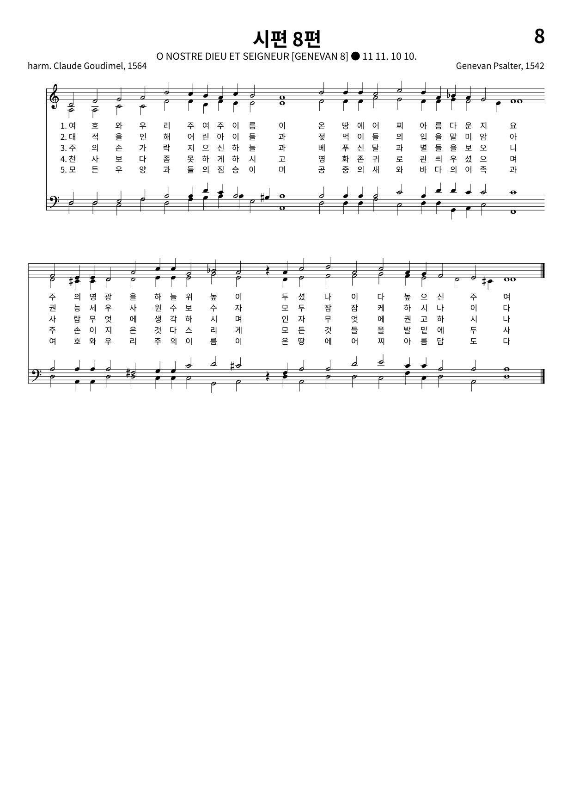

Psalm 8
O NOSTRE DIEU ET SEIGNEUR [GENEVAN 8] · 11 11. 10 10.
English title: O LORD, Our Lord, Thou God of Our Salvation
Tune: Genevan Psalter, 1542 · Harmony: Claude Goudimel, 1564 · Lyrics: Korean adaptation of Psalm 8 from the Korean Revised Version (AI draft adaptation · not yet theologically reviewed) · 5 stanzas
Score PDF MusicXML (for printing) MusicXML (for accompaniment, with prelude and repeats) Read Psalm 8 (Korean Revised Version)
Score
← Psalm 7 ListAccompaniment (in preparation)Psalm 9A →
Lyrics (Korean)
Stanza 1
여호와 우리 주여 주 이름이
온 땅에 어찌 아름다운지요
주의 영광을 하늘 위 높이
두셨나이다 높으신 주여
여호와 우리 주여 주 이름이
온 땅에 어찌 아름다운지요
주의 영광을 하늘 위 높이
두셨나이다 높으신 주여
Stanza 2
대적을 인해 어린 아이들과
젖먹이들의 입을 말미암아
권능 세우사 원수 보수자
모두 잠잠케 하시나이다
대적을 인해 어린 아이들과
젖먹이들의 입을 말미암아
권능 세우사 원수 보수자
모두 잠잠케 하시나이다
Stanza 3
주의 손가락 지으신 하늘과
베푸신 달과 별들을 보오니
사람 무엇에 생각하시며
인자 무엇에 권고하시나
주의 손가락 지으신 하늘과
베푸신 달과 별들을 보오니
사람 무엇에 생각하시며
인자 무엇에 권고하시나
Stanza 4
천사보다 좀 못하게 하시고
영화 존귀로 관 씌우셨으며
주 손이 지은 것 다스리게
모든 것들을 발밑에 두사
천사보다 좀 못하게 하시고
영화 존귀로 관 씌우셨으며
주 손이 지은 것 다스리게
모든 것들을 발밑에 두사
Stanza 5
모든 우양과 들의 짐승이며
공중의 새와 바다의 어족과
여호와 우리 주의 이름이
온 땅에 어찌 아름답도다
모든 우양과 들의 짐승이며
공중의 새와 바다의 어족과
여호와 우리 주의 이름이
온 땅에 어찌 아름답도다